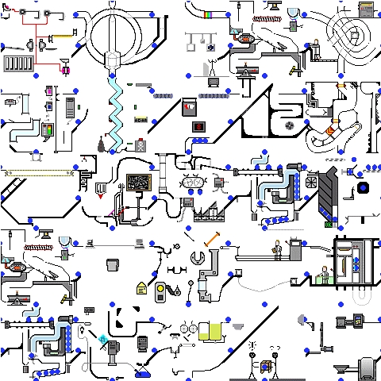

Voce Workflow
(Controlling the Chaos)
With These Guys
- Clint Harvey, Lead Application Developer
- Rob Glazebrook, Senior Front End Developer
Voce ("vo-chay")
We're part of the Voce Platforms team. We build custom responsive WordPress themes for some pretty big clients.
Version Control? GitHub!
Our version control of choice. We mostly use private repositories. Other tools suchs as SVN would work as well (or no version control at all if you're feeling lucky).

How do you get a consistent dev environment?
Ansible / Puppet / Chef
We use Ansible to automate setting up our servers and building the project infrastructure, but you could easily use another alternative.
Server Virtualization
Vagrant is our system of choice, but something like Docker is also a great option.
What do you use for automation?


Automates tasks like compiling Sass, autoprefixing CSS, and minifying JS.
Automates tasks such as cloning projects from GitHub, installing plugins and dependencies, controlling Vagrant, and syncing DBs with staging.
How do the tools work together?

Initializing a Project Locally
peon-wp-project [projectname]
- Kicks off ansible playbook which generally:
- Clones the git repo
- Runs "npm install"
- Updates VM to create a local dev server and configures DNS [project].staging.voceconnect.dev
Post Setup Tasks
peon sync-db and/or peon sync-files
Start Writing Code
Whether you're front end (glance incredulously enviously at Rob) or backend (pose bodybuilder style) you can now start digging into your theme.
How do front end and back end work together?
Front End First:
- HTML and Sass structures, with dummy content matching typical use
- Cutup is handed off to back end, explanatory conversations ensue, and back end then hooks it up to the CMS
- Complete feature is handed back to front end to add final polish
Back End First:
- Back end creates a CMS-powered structure matching the mockup layout (at least structurally) as closely as possible
- Structure is handed to front end for beautification
Branching
- Feature based branches
- Allows people to work on different priorities without stepping on each other toes
- Provides a simple way to silo code in case someone breaks something
I committed code to my branch, now what?
Pull Request
- Hey, look at me!
- Prompts a mini code review and if everything checks out a merge
Deployment
- Deploy to Stage
- Test Test Test
- Deploy to Prod
Other Options
- Continuous Integration (Jenkins, etc)
- Deployment options vary depending on hosts
- Beanstalk hosted Git has great deployment tools built in, Pantheon has Git and Dev/Stage/Prod environments all in one spot
Questions?